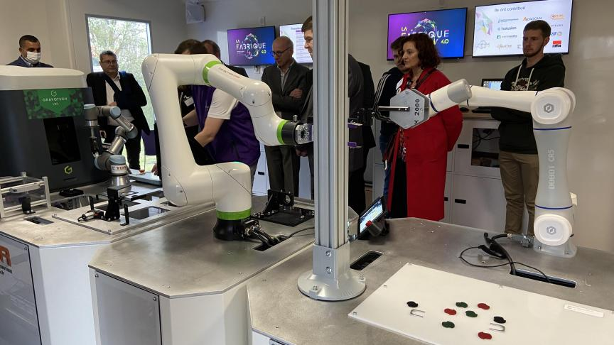
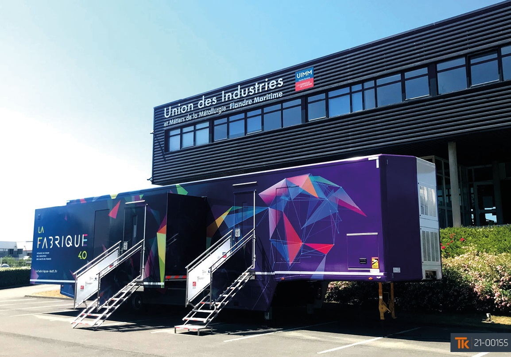

A la fin de cette sortie, l'entreprise La Fabrique (4.0), nous a permis de comprendre comment de simples objets du quotidiens sont fabriqués.
Nous avons pu y observer un bras articulé, ainsi que son fonctionnement.
Nous avons aussi eu l'intervention d'une experte avec un diaporama.
Voici ci-dessous une photo de l'intérieur et de l'extérieur de la remorque.